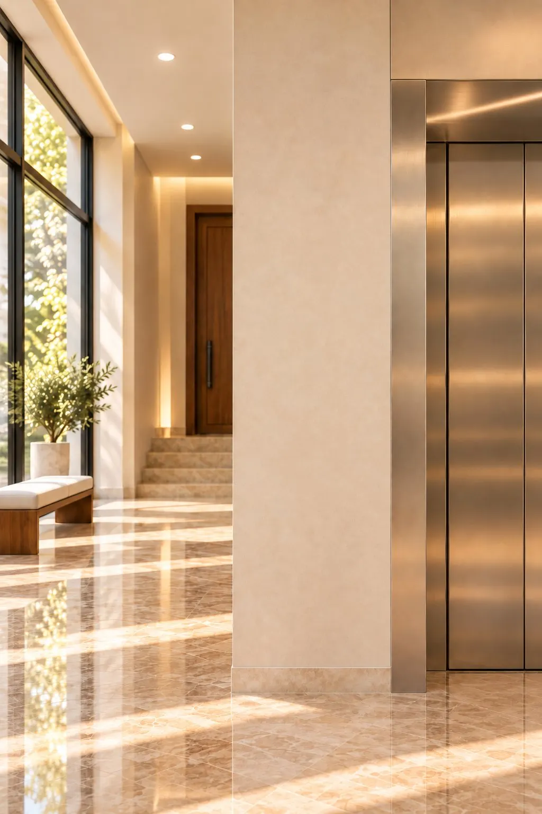
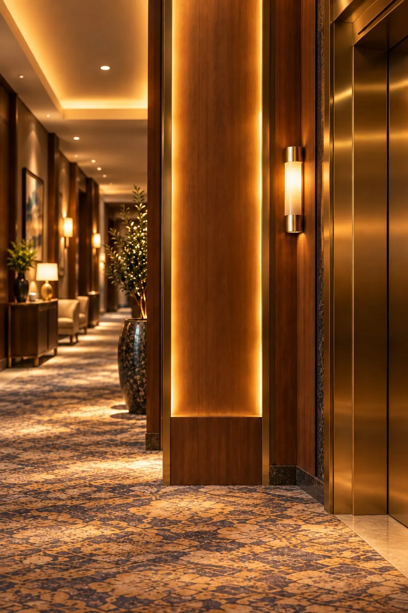
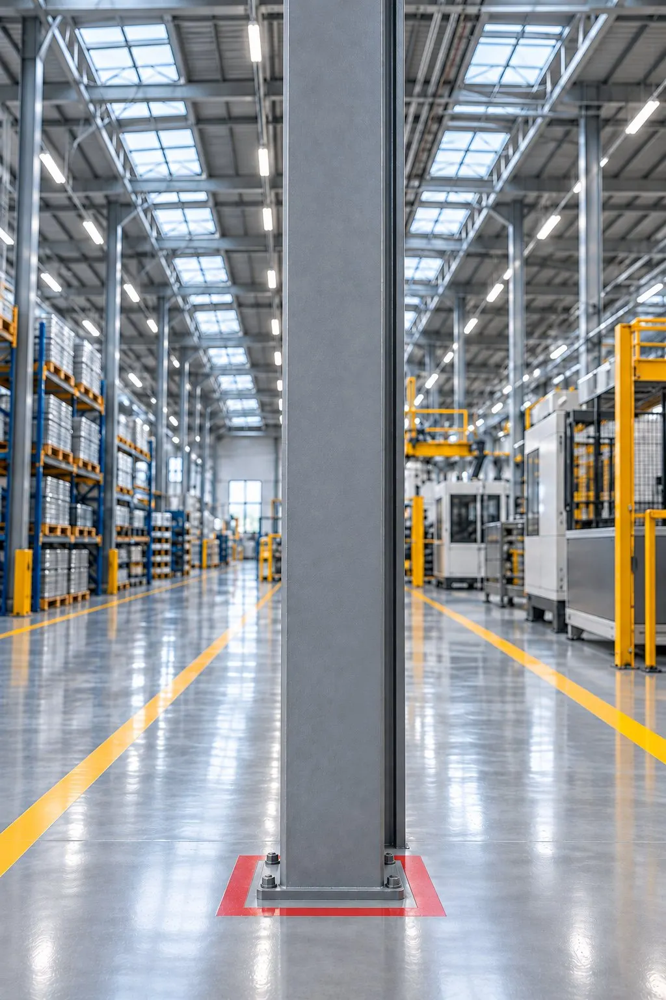

Hakkımızda
2019'dan beri kurumların güvenliğini kuruyoruz.
İstanbul merkezli Kaptan; otellerin, hastanelerin, belediye binalarının ve fabrikaların yangın güvenliğini, kantar ve terazilerini kuruyor ve bakımını yapıyor.

Biz kimiz
İki şirket, tek çatı.
Kaptan Yangın, yangın güvenliğini ve tartı sistemlerini tek çatı altında üstlenir. Merkezimiz İstanbul'da, Fatih Samatya'da; Antalya'da Finike şubemiz var.
Müşterilerimiz kurumlar: oteller, hastaneler, belediye binaları ve fabrikalar. Keşiften periyodik bakıma kadar aynı ekip sahada.
Ne yapıyoruz
Kurulumdan muayeneye.
01 · Yangın
Söndürücü
- Satış
- Dolum
- Bakım ve periyodik kontrol
- Değişim
02 · Kurulum
Sistem ve montaj
- Montaj
- Yangın kapısı satış ve montaj
- Servis
03 · Kantar
Tartı sistemleri
- Kantar servisi ve tamiri
- Parça değişimi (akü, yük hücresi)
- Kalibrasyon
- Kantar muayenesi
04 · Proje
Proje ve eğitim
- Tahliye planı
- Survey
- Sertifika
- Yangın eğitimi
Nasıl çalışıyoruz
Dört adımda güvenli bina.
Keşif
Binayı yerinde görür, riskleri ve ihtiyacı çıkarırız.
Proje
Doğru tip, sayı ve yerleşimi belirler, teklifi hazırlarız.
Kurulum
Ürünleri kurar, etiketler ve kayda geçiririz.
Bakım
Dolum ve kontrolleri zamanında yaparız. Kantar ve terazilerde muayene 2 yılda bir, Ocak–Şubat'ta.
Mekânlar
Her mekâna doğru çözüm.





Referanslar
Bize güvenen kurumlar
Bayilikler